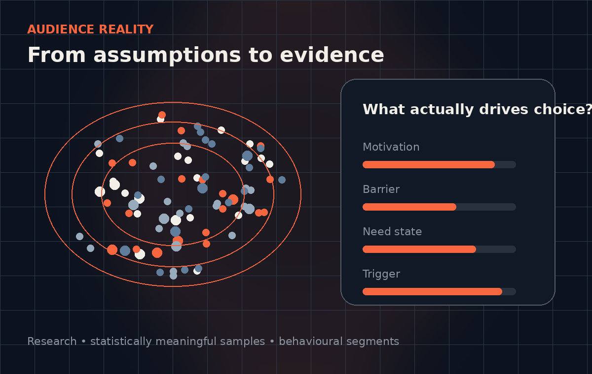

Problem 01
You don’t know your customer as well as you think you do.
Most organisations are making decisions from personas, old research, internal assumptions and whatever the loudest stakeholder believes. That isn’t segmentation. Until you have spoken directly to a statistically meaningful sample of your audience, identified the drivers of choice that actually separate one segment from another, and understood the pain points, barriers and motivations behind their behaviour, you are still guessing. You cannot reliably sell something, change behaviour or build mental availability around assumptions.